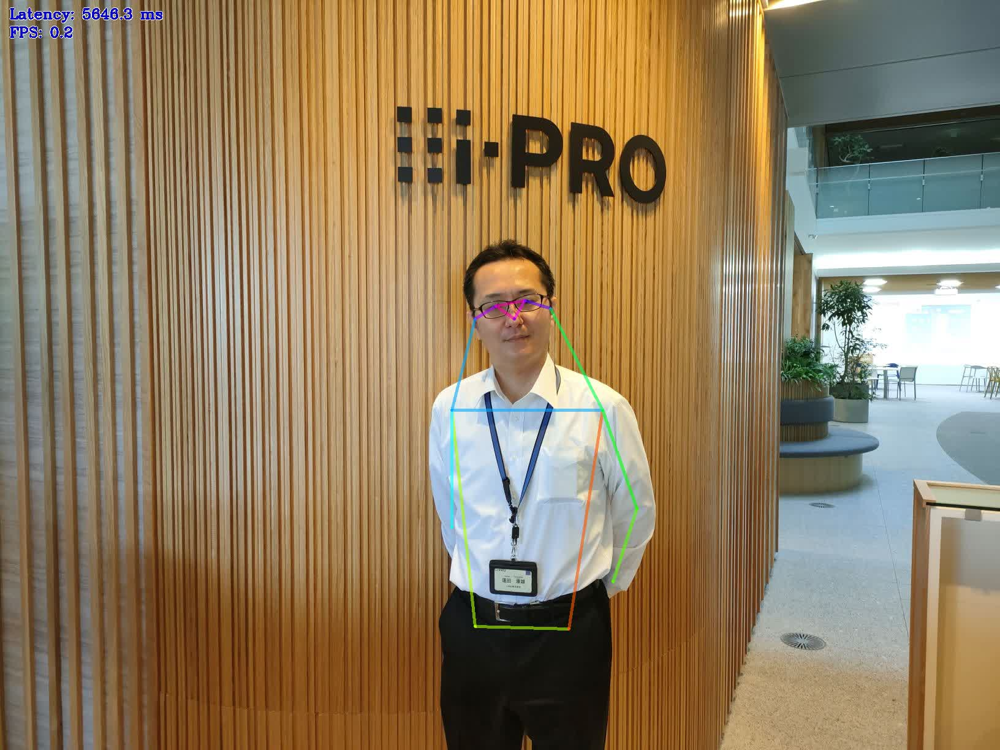

本ページは i-PRO株式会社 の有志メンバーにより記載されたものです。
本ページの情報は ライセンス に記載の条件で提供されます。
本ページでは、i-PRO カメラとLinux OS の PCを HTTPで接続してJPEG映像を連続でOpenvinoで処理するプログラムをpythonで作成します。
（記事が好評であれば、c++の記事も準備したいと思います。）
カメラ接続のPython の記事は こちら を参照ください。
OpenVINO™ ツールキットは、インテルが無償で提供しているインテル製の CPU や GPU、VPU、FPGA などのパフォーマンスを最大限に活用して、コンピューター・ビジョン、画像関係をはじめ、自然言語処理や音声処理など、幅広いディープラーニング・モデルで推論を最適化し高速化する推論エンジン / ツールスイートです。[2] （Intel公式より）
OpenVINO™ ツールキットは、シンプルなコード記述で動作するため、AI の導入や保守を簡素化することができます。インテルの CPU や GPU、VPU、FPGA などの各種デバイスで共通したコードを使用でき、優れた推論エンジンにより AI アプリケーションのパフォーマンスをそれぞれのデバイスに最適化して展開可能です。最適化された事前学習済みモデルを提供する Open Model Zoo (OMZ) や TensorFlow、PyTorch、Caffe* などの一般的なフレームワークを使用してトレーニングしたモデルを変換し、最適化する Model Optimizer を使用できます。[2] （Intel公式より）
第 6 世代～第 13 世代インテル® Core™ プロセッサーで使用する事ができ、特に第11世代CoreプロセッサではGPU性能が引き上げられており、気軽にAIアプリケーションを試すには最適なものになっています。
今回は第8世代インテル® Core™ プロセッサーのNUCを使って、最適化された事前学習済みモデルを提供する Open Model Zoo (OMZ) を利用しています。
OpenVINOのバージョンは、2022年12月に バージョン2022.3 LTSがリリースされています。
筆者は記事を記載するため、2022年10月時から調査を始めていますが、当時の動作確認ではUbuntu 22.04 LTSで動かなかった問題が発生しているので、記事を再現する場合は、ubuntuのバージョンおよびOpenvinoのバージョンは合わせて頂くようにお願いいたします。
OpenVINOをubuntu20.04 LTSおよび ubuntu22.04 LTSにインストールして動作確認を行っています。
公式ページは以下のURLとなりますので、問題があったら公式のページを参照してください。
https://docs.openvino.ai/latest/home.html
| 開発環境 : | python | 3.8.10 （Ubuntu 20.04 LTS デフォルトインストール） |
| ライブラリ : | OpenVINO |
2022.3 LTS |
| OS : | Ubuntu | 20.04 LTS or 22.04LTS |
補足説明:
第8世代インテル® Core™ プロセッサーのNUCでは、Ubuntu 20.04 LTS
のインストール時にセキュアブートがOnになっているとエラーが発生します。インストール時はBIOSの設定をセキュアブートOffにしてください。（インストール後にセキュアブート設定を戻しても問題ありません）
Openvinoのインストール時に非常に多くのライブラリがインストールされます。そのため、仮想環境（venv）を利用しています。OpenVINOの動作時にactivateをするのを忘れないようにお願いします。
以下のコマンドを実施して環境を準備します。今回はworkというディレクトリを作成して環境を構築します。
mkdir work && cd work sudo apt update sudo apt upgrade sudo apt --fix-missing update sudo apt --fix-broken install sudo apt install -y python3-pip python3-venv python3 -m pip install -U pip setuptools python3 -m pip install --upgrade pip python3 -m venv venv-ov22.3 source venv-ov22.3/bin/activate
ここからは仮想環境に入っての作業となります。
python3 -m pip install -U pip setuptools python3 -m pip install --upgrade pip python3 -m pip install openvino==2022.3.0 openvino-dev[tensorflow2,pytorch,caffe,onnx,mxnet,kaldi]==2022.3.0
大量のインストールが始まりますので、終わるまで待ちましょう。
注意）python3 -m pip install --upgrade pip を忘れるとopenvinoのインストールパッケージを認識しません。
次にGPUの利用の為にNEO OpenCL compute runtimeをインストールします。（CPU駆動で問題ない場合は、この操作は不要です）
mkdir neo && cd neo wget https://github.com/intel/intel-graphics-compiler/releases/download/igc-1.0.12812.26/intel-igc-core_1.0.12812.26_amd64.deb wget https://github.com/intel/intel-graphics-compiler/releases/download/igc-1.0.12812.26/intel-igc-opencl_1.0.12812.26_amd64.deb wget https://github.com/intel/compute-runtime/releases/download/22.53.25242.13/intel-level-zero-gpu-dbgsym_1.3.25242.13_amd64.ddeb wget https://github.com/intel/compute-runtime/releases/download/22.53.25242.13/intel-level-zero-gpu_1.3.25242.13_amd64.deb wget https://github.com/intel/compute-runtime/releases/download/22.53.25242.13/intel-opencl-icd-dbgsym_22.53.25242.13_amd64.ddeb wget https://github.com/intel/compute-runtime/releases/download/22.53.25242.13/intel-opencl-icd_22.53.25242.13_amd64.deb wget https://github.com/intel/compute-runtime/releases/download/22.53.25242.13/libigdgmm12_22.3.0_amd64.deb sudo dpkg -i *.deb cd ..
注意）このruntime群はバージョンの更新がありますので、以下のURLで最新を確認してください
https://github.com/intel/compute-runtime/releases
dpkgでのパッケージインストール時でエラーが発生する場合は、以下のコマンドを実行してください。
sudo apt --fix-broken install sudo apt update sudo apt upgrade
omz_downloader --name resnet-50-tf omz_converter --name resnet-50-tf --precisions FP16 benchmark_app -m public/resnet-50-tf/FP16/resnet-50-tf.xml -niter 100 -d CPU benchmark_app -m public/resnet-50-tf/FP16/resnet-50-tf.xml -niter 100 -d GPU
omz_downloader や omz_converterのコマンドが認識されてていなければ、OpenVINOのインストールに失敗しています。
仮想環境になっているかも含めて確認して、インストールをやり直してください。
モデルをダウンロードしていますので、ディスク容量を気にされる方は、ベンチマーク後publicディレクトリを削除してください。
注意）GPUを利用する場合（-d GPU）は、一度ロード処理が入るため、実行が遅いように感じますが、ロード後の処理速度は速くなります。
OpenVINOには、学習済みモデルであるOpenModelZooが用意されています。
OpenModelZooのデモを実行することで気軽にAIアプリケーションを試すことが出来ます。
sudo apt install -y git git clone https://github.com/openvinotoolkit/open_model_zoo cd open_model_zoo/ git submodule init git submodule update --recursive python3 -m pip install demos/common/python/ python3 -m pip install -r demos/requirements.txt
python3 -m pip install -r demos/requirements.txtのコマンドでデモを実施するための大量のインストールが始まります。
インストールが終わることでデモを実行する準備が出来ました。
デモの一つであるhuman_pose_estimation_demoを実行してみましょう。
公式の手順を実施します。
https://docs.openvino.ai/latest/omz_demos_human_pose_estimation_demo_python.html
まずは、学習済みモデルをダウンロードします。以下のコマンドを実施してください。
cd demos/human_pose_estimation_demo/python/ omz_downloader --list models.lst omz_converter --list models.lst
モデルがダウンロードされるまで時間がかかりますが、一度ダウンロードし最適化すれば次からは上記コマンドは不要となります。
python3 human_pose_estimation_demo.py -m intel/human-pose-estimation-0005/FP16/human-pose-estimation-0005.xml -i [入力ファイル名] -o [出力ファイル名] -at ae -d CPU
入力ファイル名に人物が表示されている画像ファイル名を入力し、実行後に出力ファイルを確認してください。
以下のように骨格が重畳表示されている画像が出力されます。

注意）人物が大きすぎる場合と小さすぎる場合の処理はモデルによって異なります。本デモを試す場合は全身が写っている写真をお使いください。
オプション -i の部分にRTSPのアドレスを入力することで動作させることも出来ますが、(その場合は -oオプションは外してください)
JPEG取得で逐次処理をさせたいので、human_pose_estimation_demo.pyを改造して、カメラを接続してみます。
[human_pose_estimation_demo_jpeg.py]
#!/usr/bin/env python3
"""
This source code is based on and modified from human_pose_estimation_demo.py in Intel's open_model_zoo demo.
The image input part is changed to a network camera, so please refer to the original to check the changes.
このソースコードは、Intelのopen_model_zooデモのhuman_pose_estimation_demo.pyを元に、改変したものです。
画像入力部分をネットワークカメラに変更していますので、変更点の確認はオリジナルを参照してください。
"""
import logging as log
import sys
from argparse import ArgumentParser, SUPPRESS
from pathlib import Path
from time import perf_counter
import cv2
import numpy as np
import requests
from requests.auth import HTTPDigestAuth
sys.path.append(str(Path(__file__).resolve().parents[2] / 'common/python'))
sys.path.append(str(Path(__file__).resolve().parents[2] / 'common/python/openvino/model_zoo'))
from model_api.models import ImageModel, OutputTransform
from model_api.performance_metrics import PerformanceMetrics
from model_api.pipelines import get_user_config, AsyncPipeline
from model_api.adapters import create_core, OpenvinoAdapter
import monitors
from images_capture import open_images_capture
from helpers import resolution, log_latency_per_stage
log.basicConfig(format='[ %(levelname)s ] %(message)s', level=log.DEBUG, stream=sys.stdout)
ARCHITECTURES = {
'ae': 'HPE-assosiative-embedding',
'higherhrnet': 'HPE-assosiative-embedding',
'openpose': 'openpose'
}
def build_argparser():
parser = ArgumentParser(add_help=False)
args = parser.add_argument_group('Options')
args.add_argument('-h', '--help', action='help', default=SUPPRESS, help='Show this help message and exit.')
args.add_argument('-m', '--model', help='Required. Path to an .xml file with a trained model.',
required=True, type=Path)
args.add_argument('-at', '--architecture_type', help='Required. Specify model\' architecture type.',
type=str, required=True, choices=('ae', 'higherhrnet', 'openpose'))
#args.add_argument('-i', '--input', required=True,
# help='Required. An input to process. The input must be a single image, '
# 'a folder of images, video file or camera id.')
args.add_argument('--loop', default=False, action='store_true',
help='Optional. Enable reading the input in a loop.')
#args.add_argument('-o', '--output', required=False,
# help='Optional. Name of the output file(s) to save.')
args.add_argument('-limit', '--output_limit', required=False, default=1000, type=int,
help='Optional. Number of frames to store in output. '
'If 0 is set, all frames are stored.')
args.add_argument('-d', '--device', default='CPU', type=str,
help='Optional. Specify the target device to infer on; CPU, GPU, HDDL or MYRIAD is '
'acceptable. The demo will look for a suitable plugin for device specified. '
'Default value is CPU.')
common_model_args = parser.add_argument_group('Common model options')
common_model_args.add_argument('-t', '--prob_threshold', default=0.1, type=float,
help='Optional. Probability threshold for poses filtering.')
common_model_args.add_argument('--tsize', default=None, type=int,
help='Optional. Target input size. This demo implements image pre-processing '
'pipeline that is common to human pose estimation approaches. Image is first '
'resized to some target size and then the network is reshaped to fit the input '
'image shape. By default target image size is determined based on the input '
'shape from IR. Alternatively it can be manually set via this parameter. Note '
'that for OpenPose-like nets image is resized to a predefined height, which is '
'the target size in this case. For Associative Embedding-like nets target size '
'is the length of a short first image side.')
common_model_args.add_argument('--layout', type=str, default=None,
help='Optional. Model inputs layouts. '
'Ex. NCHW or input0:NCHW,input1:NC in case of more than one input.')
infer_args = parser.add_argument_group('Inference options')
infer_args.add_argument('-nireq', '--num_infer_requests', help='Optional. Number of infer requests',
default=0, type=int)
infer_args.add_argument('-nstreams', '--num_streams',
help='Optional. Number of streams to use for inference on the CPU or/and GPU in throughput '
'mode (for HETERO and MULTI device cases use format '
'<device1>:<nstreams1>,<device2>:<nstreams2> or just <nstreams>).',
default='', type=str)
infer_args.add_argument('-nthreads', '--num_threads', default=None, type=int,
help='Optional. Number of threads to use for inference on CPU (including HETERO cases).')
io_args = parser.add_argument_group('Input/output options')
io_args.add_argument('-no_show', '--no_show', help="Optional. Don't show output.", action='store_true')
io_args.add_argument('--output_resolution', default=None, type=resolution,
help='Optional. Specify the maximum output window resolution '
'in (width x height) format. Example: 1280x720. '
'Input frame size used by default.')
io_args.add_argument('-u', '--utilization_monitors', default='', type=str,
help='Optional. List of monitors to show initially.')
debug_args = parser.add_argument_group('Debug options')
debug_args.add_argument('-r', '--raw_output_message', help='Optional. Output inference results raw values showing.',
default=False, action='store_true')
return parser
default_skeleton = ((15, 13), (13, 11), (16, 14), (14, 12), (11, 12), (5, 11), (6, 12), (5, 6),
(5, 7), (6, 8), (7, 9), (8, 10), (1, 2), (0, 1), (0, 2), (1, 3), (2, 4), (3, 5), (4, 6))
colors = (
(255, 0, 0), (255, 0, 255), (170, 0, 255), (255, 0, 85),
(255, 0, 170), (85, 255, 0), (255, 170, 0), (0, 255, 0),
(255, 255, 0), (0, 255, 85), (170, 255, 0), (0, 85, 255),
(0, 255, 170), (0, 0, 255), (0, 255, 255), (85, 0, 255),
(0, 170, 255))
def draw_poses(img, poses, point_score_threshold, output_transform, skeleton=default_skeleton, draw_ellipses=False):
img = output_transform.resize(img)
if poses.size == 0:
return img
stick_width = 4
img_limbs = np.copy(img)
for pose in poses:
points = pose[:, :2].astype(np.int32)
points = output_transform.scale(points)
points_scores = pose[:, 2]
# Draw joints.
for i, (p, v) in enumerate(zip(points, points_scores)):
if v > point_score_threshold:
cv2.circle(img, tuple(p), 1, colors[i], 2)
# Draw limbs.
for i, j in skeleton:
if points_scores[i] > point_score_threshold and points_scores[j] > point_score_threshold:
if draw_ellipses:
middle = (points[i] + points[j]) // 2
vec = points[i] - points[j]
length = np.sqrt((vec * vec).sum())
angle = int(np.arctan2(vec[1], vec[0]) * 180 / np.pi)
polygon = cv2.ellipse2Poly(tuple(middle), (int(length / 2), min(int(length / 50), stick_width)),
angle, 0, 360, 1)
cv2.fillConvexPoly(img_limbs, polygon, colors[j])
else:
cv2.line(img_limbs, tuple(points[i]), tuple(points[j]), color=colors[j], thickness=stick_width)
cv2.addWeighted(img, 0.4, img_limbs, 0.6, 0, dst=img)
return img
def print_raw_results(poses, scores, frame_id):
log.debug(' ------------------- Frame # {} ------------------ '.format(frame_id))
for pose, pose_score in zip(poses, scores):
pose_str = ' '.join('({:.2f}, {:.2f}, {:.2f})'.format(p[0], p[1], p[2]) for p in pose)
log.debug('{} | {:.2f}'.format(pose_str, pose_score))
def main():
args = build_argparser().parse_args()
#cap = open_images_capture(args.input, args.loop)
next_frame_id = 1
next_frame_id_to_show = 0
metrics = PerformanceMetrics()
render_metrics = PerformanceMetrics()
video_writer = cv2.VideoWriter()
plugin_config = get_user_config(args.device, args.num_streams, args.num_threads)
model_adapter = OpenvinoAdapter(create_core(), args.model, device=args.device, plugin_config=plugin_config,
max_num_requests=args.num_infer_requests, model_parameters = {'input_layouts': args.layout})
start_time = perf_counter()
user_id = "user-id" # Change to match your camera setting
user_pw = "password" # Change to match your camera setting
host = "192.168.0.10" # Change to match your camera setting
url = f"http://{host}/cgi-bin/camera?"
# Request and receive image from camera.
rs = requests.get(url, auth=HTTPDigestAuth(user_id, user_pw))
# Convert from binary to ndarray.
img_buf= np.frombuffer(rs.content, dtype=np.uint8)
# Convert from ndarray to OpenCV image.
frame = cv2.imdecode(img_buf, cv2.IMREAD_UNCHANGED)
#frame = cap.read()
if frame is None:
raise RuntimeError("Can't read an image from the input")
config = {
'target_size': args.tsize,
'aspect_ratio': frame.shape[1] / frame.shape[0],
'confidence_threshold': args.prob_threshold,
'padding_mode': 'center' if args.architecture_type == 'higherhrnet' else None, # the 'higherhrnet' and 'ae' specific
'delta': 0.5 if args.architecture_type == 'higherhrnet' else None, # the 'higherhrnet' and 'ae' specific
}
model = ImageModel.create_model(ARCHITECTURES[args.architecture_type], model_adapter, config)
model.log_layers_info()
hpe_pipeline = AsyncPipeline(model)
hpe_pipeline.submit_data(frame, 0, {'frame': frame, 'start_time': start_time})
output_transform = OutputTransform(frame.shape[:2], args.output_resolution)
if args.output_resolution:
output_resolution = output_transform.new_resolution
else:
output_resolution = (frame.shape[1], frame.shape[0])
presenter = monitors.Presenter(args.utilization_monitors, 55,
(round(output_resolution[0] / 4), round(output_resolution[1] / 8)))
#if args.output and not video_writer.open(args.output, cv2.VideoWriter_fourcc(*'MJPG'), cap.fps(),
# output_resolution):
# raise RuntimeError("Can't open video writer")
while True:
if hpe_pipeline.callback_exceptions:
raise hpe_pipeline.callback_exceptions[0]
# Process all completed requests
results = hpe_pipeline.get_result(next_frame_id_to_show)
# Request and receive image from camera.
rs = requests.get(url, auth=HTTPDigestAuth(user_id, user_pw))
# Convert from binary to ndarray.
img_buf= np.frombuffer(rs.content, dtype=np.uint8)
# Convert from ndarray to OpenCV image.
frame = cv2.imdecode(img_buf, cv2.IMREAD_UNCHANGED)
if results:
(poses, scores), frame_meta = results
frame = frame_meta['frame']
start_time = frame_meta['start_time']
if len(poses) and args.raw_output_message:
print_raw_results(poses, scores, next_frame_id_to_show)
presenter.drawGraphs(frame)
rendering_start_time = perf_counter()
frame = draw_poses(frame, poses, args.prob_threshold, output_transform)
render_metrics.update(rendering_start_time)
metrics.update(start_time, frame)
if video_writer.isOpened() and (args.output_limit <= 0 or next_frame_id_to_show <= args.output_limit-1):
video_writer.write(frame)
next_frame_id_to_show += 1
if not args.no_show:
cv2.imshow('Pose estimation results', frame)
key = cv2.waitKey(1)
ESC_KEY = 27
# Quit.
if key in {ord('q'), ord('Q'), ESC_KEY}:
break
presenter.handleKey(key)
continue
if hpe_pipeline.is_ready():
# Get new image/frame
start_time = perf_counter()
#frame = cap.read()
if frame is None:
break
# Submit for inference
hpe_pipeline.submit_data(frame, next_frame_id, {'frame': frame, 'start_time': start_time})
next_frame_id += 1
else:
# Wait for empty request
hpe_pipeline.await_any()
hpe_pipeline.await_all()
if hpe_pipeline.callback_exceptions:
raise hpe_pipeline.callback_exceptions[0]
# Process completed requests
for next_frame_id_to_show in range(next_frame_id_to_show, next_frame_id):
results = hpe_pipeline.get_result(next_frame_id_to_show)
(poses, scores), frame_meta = results
frame = frame_meta['frame']
start_time = frame_meta['start_time']
if len(poses) and args.raw_output_message:
print_raw_results(poses, scores, next_frame_id_to_show)
presenter.drawGraphs(frame)
rendering_start_time = perf_counter()
frame = draw_poses(frame, poses, args.prob_threshold, output_transform)
render_metrics.update(rendering_start_time)
metrics.update(start_time, frame)
if video_writer.isOpened() and (args.output_limit <= 0 or next_frame_id_to_show <= args.output_limit-1):
video_writer.write(frame)
if not args.no_show:
frame = cv2.resize(frame, None, None, 0.5, 0.5)
cv2.imshow('Pose estimation results', frame)
key = cv2.waitKey(1)
ESC_KEY = 27
# Quit.
if key in {ord('q'), ord('Q'), ESC_KEY}:
break
presenter.handleKey(key)
metrics.log_total()
#log_latency_per_stage(cap.reader_metrics.get_latency(),
# hpe_pipeline.preprocess_metrics.get_latency(),
# hpe_pipeline.inference_metrics.get_latency(),
# hpe_pipeline.postprocess_metrics.get_latency(),
# render_metrics.get_latency())
for rep in presenter.reportMeans():
log.info(rep)
if __name__ == '__main__':
sys.exit(main() or 0)
ソースコードの内容としては、画像取得要に提供されていたopen_images_captureを使用せずに、HTTPによるJPEG画像の取得に変更しています。
それ以外の部分は大きく変更していません。
以下のコマンドを実施して動作を確認してください。
python3 human_pose_estimation_demo.py -m intel/human-pose-estimation-0005/FP16/human-pose-estimation-0005.xml -at ae -d GPU
オリジナルのhuman_pose_estimation_demo.pyのライセンスは以下の通りです。
本ページで紹介のソースコードは、下記 github より取得できます。
下記 github のソースコードと本ページの内容は差異がある場合があります。
i-pro-corp/openvino: Examples for i-PRO cameras. (github.com)
本ページの情報は、特記無い限り下記ライセンスで提供されます。
| 2023/4/18 | - | 新規作成, | 蓬田 康雄 |
i-PRO - Programming Items トップページ